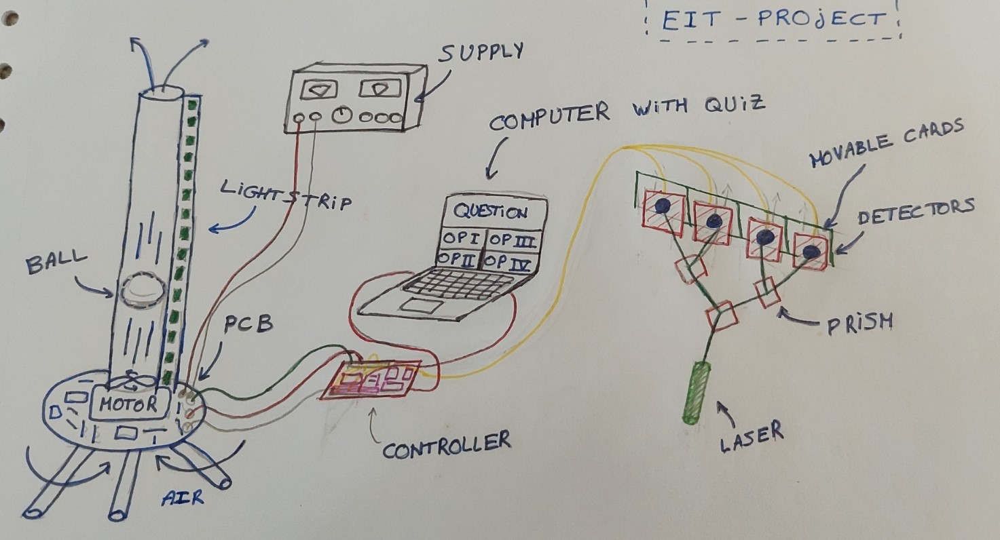
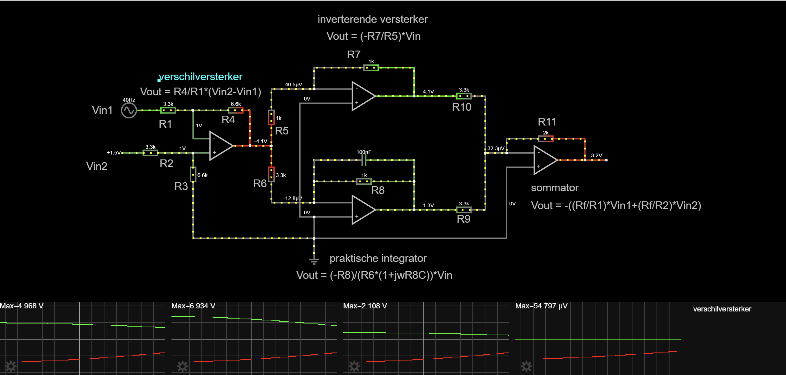
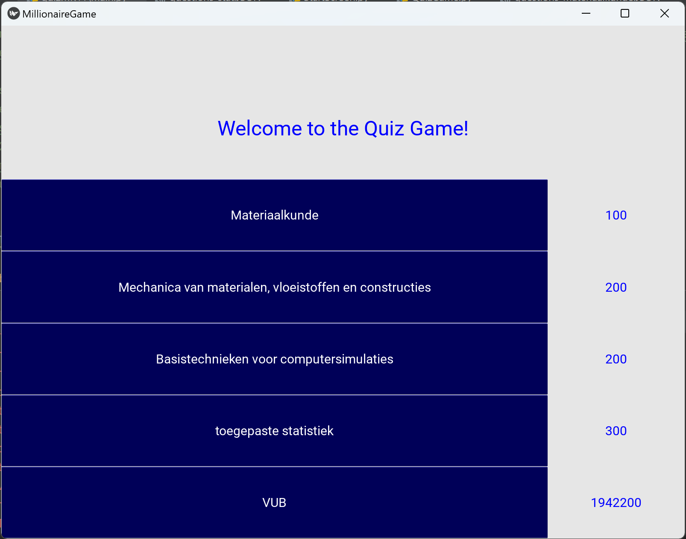
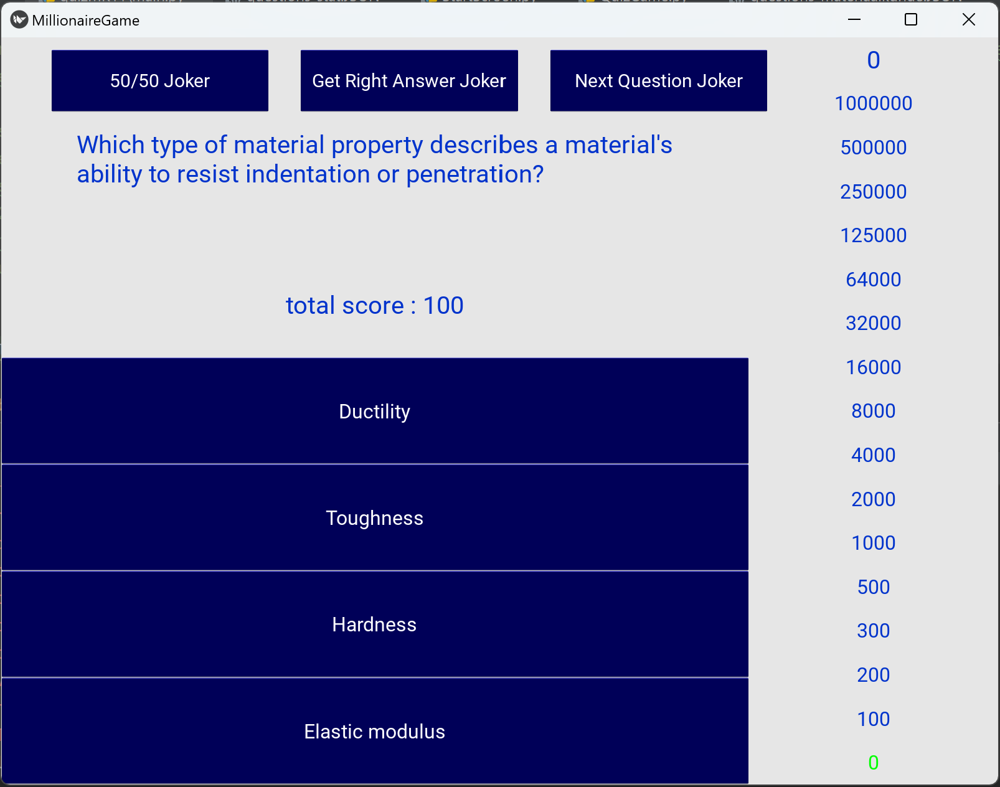
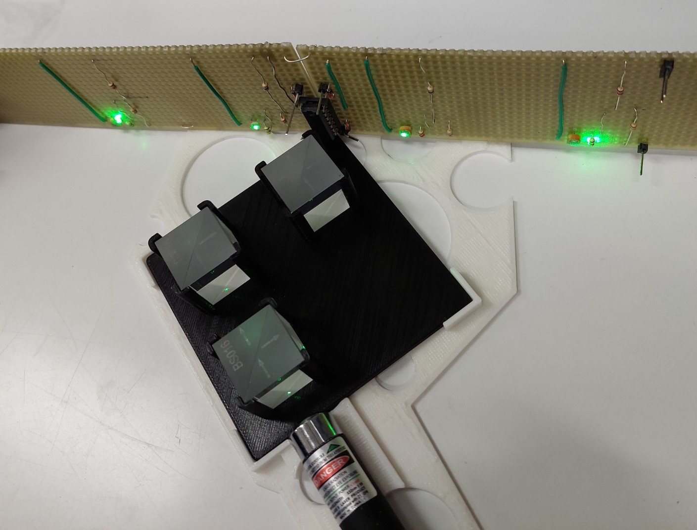
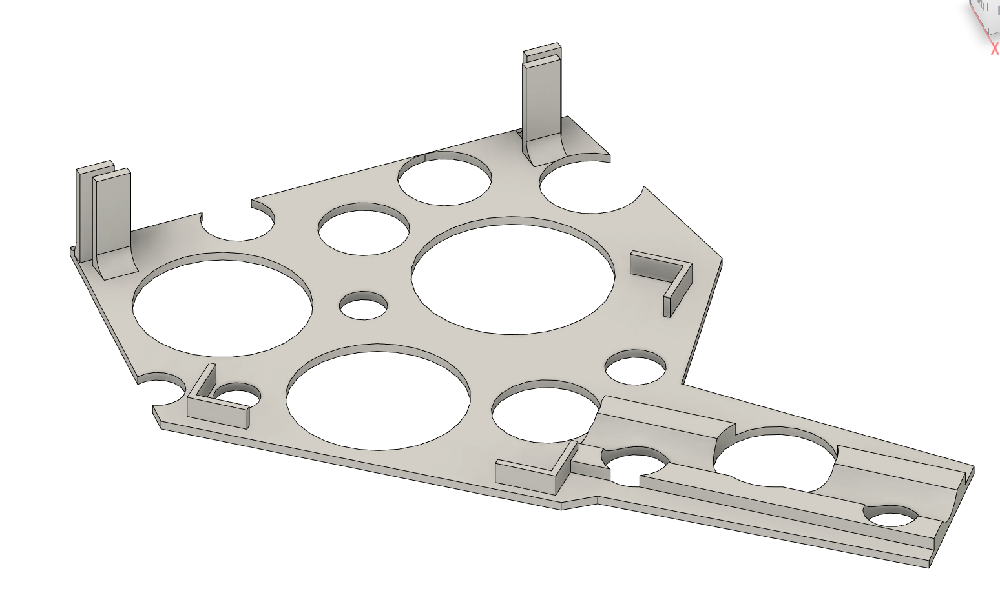

Electronic and information technology project at the VUB

Introduction
In the second year of my engineering curriculum at VUB, we were assigned 4 group projects, all of which are explained and available on this website. The project I will describe here is related to electronics and information technology. In short, we decided to build a quiz where your score would be displayed by the height of a ball suspended in a Plexiglas tube using a ventilator. The faster the ventilator spins, the higher the ball can go in the tube. To cover various aspects of engineering, we implemented laser controls for selecting quiz answers. Using special prisms, we transformed one laser beam into four, each representing a possible answer for the quiz questions. By interrupting these beams using cards and photodetectors for detecting it, we could register high or low signals, simulating button presses. Additionally, our professor requested an element related to biomedical engineering, so we integrated a heartbeat sensor. Its readings were displayed on a light strip alongside the Plexiglas tube. This entire project was completed in less than 6 days, spread over 6 weeks, with a team of 5 motivated engineering students. The following picture represents the basic architecture of our project:

analog/digital
Our initial task was to familiarize ourselves with all the technologies needed for the project. The central component was the tower with its ball. Two values needed to work in tandem: the desired height for the ball and its current height.
To determine the appropriate power for the ventilator, we initially employed an analog circuit utilizing OPAMPs and other electronic components to build a Proportional, Integral, and Derivative (PID) regulator. The circuitry was first simulated on falstad and can be found on following picture. Despite initial challenges, we achieved functionality. However, due to the complexity of the analog circuitry, we eventually opted for a digital approach:
To determine the appropriate power for the ventilator, we initially employed an analog circuit utilizing OPAMPs and other electronic components to build a Proportional, Integral, and Derivative (PID) regulator. The circuitry was first simulated on falstad and can be found on following picture. Despite initial challenges, we achieved functionality. However, due to the complexity of the analog circuitry, we eventually opted for a digital approach:

Instead of analog, we transitioned to a digital system using a Microchip Curiosity controller, akin to an Arduino but with expanded capabilities. Programming this microcontroller via MPLAB, we established communication via UART protocol, enabling an external program to send desired height values for the ball, which were then converted into appropriate PWM signals for the ventilator.
game development

Returning to our original goal, we developed a quiz game resembling "Who Wants to Be a Millionaire?" with a total of 16 questions. Each correct answer doubled the player's score. The game interface was developed using the Python Kivy module, previously utilized for building a darts robot. The layout is depicted in the following picture. The complete code can be found on my github page. Like the mobile game, several quiz themes are possible. For this exemple I put questions related to my other engineering classes. If you select material science (materiaalkunde) you can then play the game. Each time you have 4 possible answers to select from. you're actual score is shown on top and on the right side of the screen in form of a tower to illustrate the actual tower showing the score. Like the real game, you can use 3 jokers to pass a question. Once you lose, you have to start again from zero.

laser beam
Regarding answer selection, our primary objective was to use laser beams deflected into four paths, each monitored by photoresistors. A card moved in front of a photoresistor would register its presence or absence, translated via an analog circuit using OPAMPs to a binary value. This binary output interfaced with MPLAB, which communicated with the Python code via UART protocol to simulate button presses. However, due to limitations with the photoresistors and time constraints preventing the fabrication of proper PCBs, we added buttons to the game panel for reliable answer selection.


final touch
With additional time available, we decided to incorporate an image recognition feature to expand our project's scope. Upon achieving the maximum score of 1 million, a celebratory animation would trigger, capturing a photo and creating a collage of the player's face against a festive background.
Conclusion
In conclusion, we dedicated several intense days to this project and achieved a successful outcome. The experience broadened our technical knowledge and problem-solving skills significantly. We are grateful to our assistants for their invaluable support. Onward to the next project!